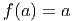
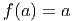
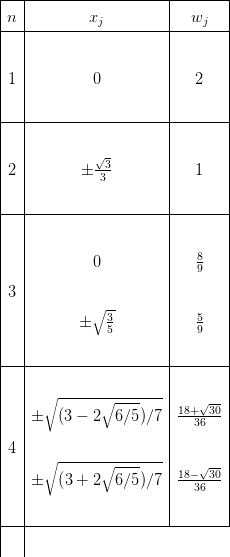
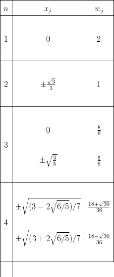

Na seção anterior tratamos de métodos diretos para a resolução de sistemas lineares. Em um método direto (por exemplo, solução via fatoração LU) obtemos uma aproximação da solução depois de realizarmos um número finito de operações (só teremos a solução ao final do processo).
Veremos nessa seção dois métodos iterativos básicos para obter uma aproximação para a solução de um sistema linear. Geralmente em um método iterativo iniciamos com uma aproximação para a solução (que pode ser ruim) e vamos melhorando essa aproximação através de sucessivas iterações.
O método de Jacobi pode ser obtido a partir do sistema linear
Isolando o elemento x1 da primeira equação temos


 | (4.24) |
Note que utilizaremos os elementos xi(k) da iteração k (a direita da equação) para estimar o elemento x1 da próxima iteração.
Da mesma forma, isolando o elemento xi de cada equação i, para todo i = 2,...,n podemos construir a iteração

Em notação mais compacta, o método de Jacobi consiste na iteração


Assim como no método de Jacobi, no método de Gauss-Seidel também isolamos o elemento xi da equação i. Porém perceba que a equação para x2(k+1) depende de x 1(k) na iteração k. Intuitivamente podemos pensar em usar x1(k+1) que acabou de ser calculado e temos
 |
Aplicando esse raciocínio podemos construir o método de Gauss-Seidel como


Em notação mais compacta, o método de Gauss-Seidel consiste na iteração:

Exemplo 4.6.2. Resolva o sistema
 



Nesta seção, discutimos sobre a análise de convergência de métodos iterativos para solução de sistema lineares. Para tanto, consideramos um sistema linear Ax = b, onde A = [ai,j]i,j=1n,n é a matriz (real) dos coeficientes, b = (a j)j=1n é um vetor dos termos constantes e x = (xj)j=1n é o vetor incógnita. No decorrer, assumimos que A é uma matriz não-singular.
Geralmente, métodos iterativos são construídos como uma iteração de ponto fixo. No caso de um sistema linear, reescreve-se a equação matricial em um problema de ponto fixo equivalente, i.e.:
 |
onde T = [ti,j]i,j=1n,n é chamada de matriz da iteração e c = (c j)j=1n de vetor da iteração. Construídos a matriz T e o vetor c, o método iterativo consiste em computar a iteração:
 |
onde x(1) é uma aproximação inicial dada.
Afim de construirmos as matrizes e os vetores de iteração do método de Jacobi e de Gauss-Seidel, decompomos a matriz A da seguinte forma:


 |
onde D é a matriz diagonal D = diag (a11,a22,…,ann), i.e.:
 |
e, respectivamente, L e U são as seguintes matrizes triangular inferior e superior:
 |
Exemplo 4.6.3. Considere o seguinte sistema linear:


 Solução. A forma matricial deste sistema é Ax = b, onde:
Solução. A forma matricial deste sistema é Ax = b, onde:
 |
A decomposição da matriz A nas matrizes L triangular inferior, D diagonal e U triangular superior é:
 |
No Scilab, podemos construir as matrizes L, D e U, da seguinte forma:


♢
Vamos, agora, usar a decomposição discutida acima para construir a matriz de iteração TJ e o vetor de iteração cJ associado ao método de Jacobi. Neste caso, temos:


 |
com x(1) uma aproximação inicial dada, sendo T J := -D-1(L + U) a matriz de iteração e cJ = D-1b o vetor da iteração.
Exemplo 4.6.4. Construa a matriz de iteração TJ e o vetor de iteração cJ do método de Jacobi para o sistema dado no Exemplo 4.6.3.
Solução. A matriz de iteração é dada por:
 |
O vetor da iteração de Jacobi é:


 |
No Scilab, podemos computar TJ e cJ da seguinte forma:


♢
A forma matricial da iteração do método de Gauss-Seidel também pode ser construída com base na decomposição A = L + D + U. Para tando, fazemos:

 |
com x(1) uma aproximação inicial dada, sendo T G := -(L + D)-1U a matriz de iteração e cJ = (L + D)-1b o vetor da iteração.
Exemplo 4.6.5. Construa a matriz de iteração TG e o vetor de iteração cG do método de Gauss-Seidel para o sistema dado no Exemplo 4.6.3.
Solução. A matriz de iteração é dada por:
 |
O vetor da iteração de Gauss-Seidel é:
 

 |
No Scilab, podemos computar TG e cG da seguinte forma:


♢
Aqui, vamos discutir condições necessárias e suficientes para a convergência de métodos iterativos. Isto é, dado um sistema Ax = b e uma iteração:
 |
x(1) dado, estabelecemos condições nas quais x(k) → x*, onde x* é a solução do sistema dado, i.e. x* = Tx* + c ou, equivalentemente, Ax* = b.
Lema 4.6.1. Seja T uma matriz real n × n. O limite lim k→∞∥Tk∥ p = 0, 1 ≤ p ≤∞, se, e somente se, ρ(T) < 1.

 Demonstração. Aqui, fazemos apenas um esboço da demonstração. Para mais
detalhes, veja [8], Teorema 4, pág. 14.
Demonstração. Aqui, fazemos apenas um esboço da demonstração. Para mais
detalhes, veja [8], Teorema 4, pág. 14.
Primeiramente, suponhamos que ∥T∥p < 1, 1 ≤ p ≤∞. Como (veja [8], Lema 2, pág. 12):
 |
temos ρ(T) < 1, o que mostra a implicação.
Agora, suponhamos que ρ(T) < 1 e seja 0 < ϵ < 1 - ρ(T). Então, existe 1 ≤ p ≤∞ tal que (veja [8], Teorema 3, página 12):
 |
Assim, temos:
 |
Da equivalência entre as normas segue a recíproca. __
Demonstração. Primeiramente, provamos a existência de (I - T)-1. Seja λ um autovalor de T e x um autovetor associado, i.e. Tx = λx. Então, (I - T)x = (1 - λ)x. Além disso, temos |λ| < ρ(T) < 1, logo (1 - λ)≠0, o que garante que (I - T) é não singular. Agora, mostramos que (I - T)-1 admite a expansão acima. Do Lema 4.6.1 e da Observação 4.6.1 temos:
 |
o que mostra que (I - T)-1 = ∑ k=0∞Tk. __
Teorema 4.6.1. A sequência recursiva {x(k)} k∈ℕ dada por:


 |
converge para solução de x = Tx + c para qualquer escolha de x(1) se, e somente se, ρ(T) < 1.
Demonstração. Primeiramente, assumimos que ρ(T) < 1. Observamos que:


 |
Ora, se x* é a solução de x = Tx + c, então (I - T)x* = c, i.e. x* = (I - T)-1c. Logo, temos demonstrado que x(k) converge para a solução de x = Tx + c, para qualquer escolha de x(1).
Agora, suponhamos que x(k) converge para x* solução de x = Tx + c, para qualquer escolha de x(1). Seja, então, y um vetor arbitrário e x(1) = x* - y. Observamos que:
 |
Como y é arbitrário, da Observação 4.6.1 temos lim k→∞∥T(k)∥ p = 0, 1 ≤ p ≤∞. Então, o Lema 4.6.1 garante que ρ(T) < 1. __
Observação 4.6.2. Pode-se mostrar que tais métodos iterativos tem taxa de convergência super linear com:
 |
Para mais detalhes, veja [8], pág. 61-64.
Exemplo 4.6.6. Mostre que, para qualquer escolha da aproximação inicial, ambos os métodos de Jacobi e Gauss-Seidel são convergentes quando aplicados ao sistema linear dado no Exemplo 4.6.3.


Solução. Do Teorema 4.6.1, vemos que é necessário e suficiente que ρ(TJ) < 1 e ρ(TG) < 1. Computando estes raios espectrais, obtemos ρ(TJ) ≈ 0,32 e ρ(TG) ≈ 0,13. Isto mostra que ambos os métodos serão convergentes. ♢
Uma condição suficiente porém não necessária para que os métodos de Gauss-Seidel e Jacobi convirjam é a que a matriz seja estritamente diagonal dominante.

 Definição 4.6.2. Uma matriz A é diagonal dominante quando
Definição 4.6.2. Uma matriz A é diagonal dominante quando
 |
e para ao menos um i, aii é estritamente maior que a soma dos elementos fora da diagonal.
Teorema 4.6.2. Se a matriz A for diagonal dominante8 , então os métodos de Jacobi e Gauss-Seidel serão convergentes independente da escolha inicial x(1).
Se conhecermos a solução exata x do problema, podemos calcular o erro relativo em cada iteração como:
 |
Em geral não temos x, entretanto podemos estimar o vetor resíduo
r(k) = b - A . Note que quando o erro tende a zero, o resíduo também tende a
zero.
. Note que quando o erro tende a zero, o resíduo também tende a
zero.
Teorema 4.6.3. O erro relativo e o resíduo estão relacionados como (veja [3])
 |
onde k(A) é o número de condicionamento.
Exemplo 4.6.7. Ambos os métodos de Jacobi e Gauss-Seidel são convergentes para o sistema dado no Exemplo 4.6.3, pois a matriz dos coeficientes deste é uma matriz estritamente diagonal dominante.